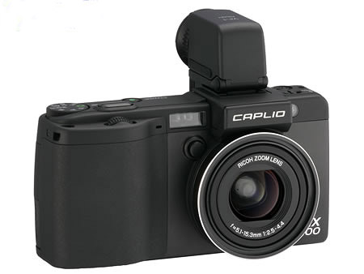
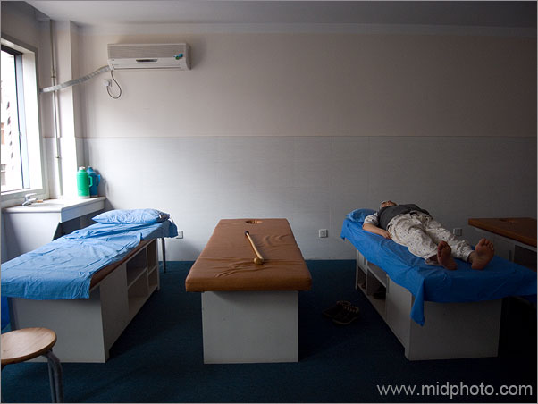
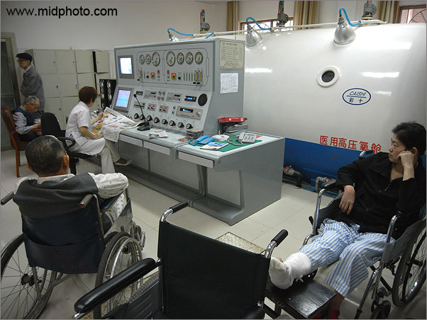
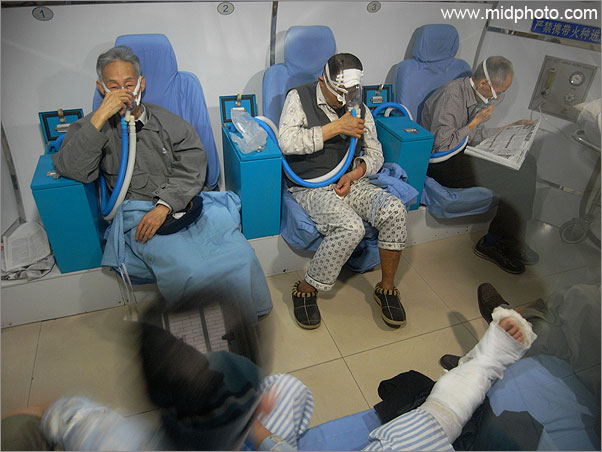
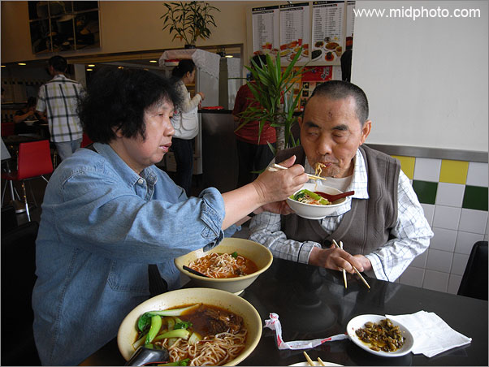
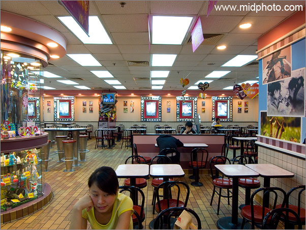
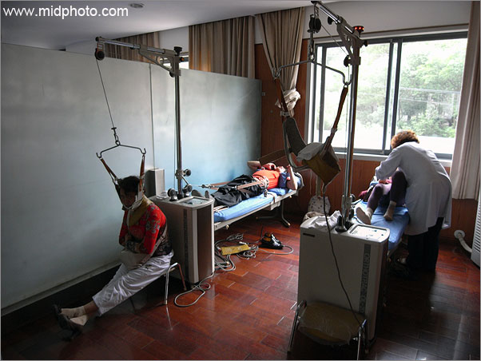
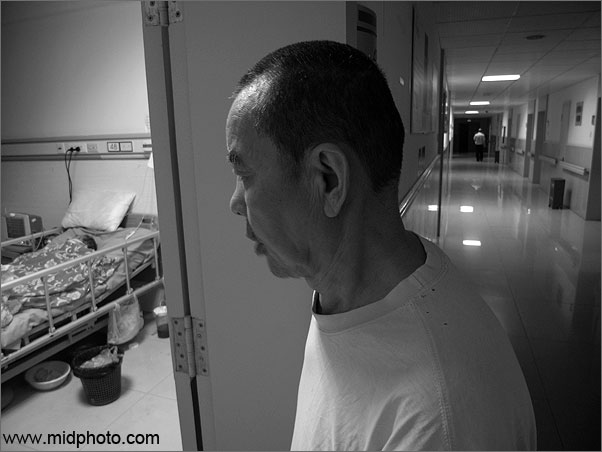
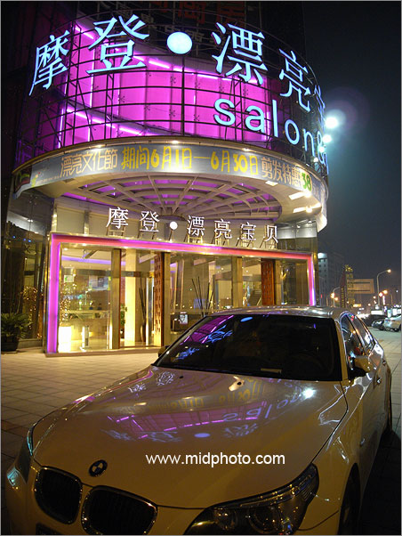
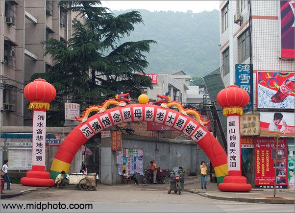

|
理光GX100数码相机快速评论
Quick words on Ricoh GX100
Canon
A620以及它的后续机型A630和640都是非常不错的机子。2006年的夏天在上海外滩我被小偷光顾，随身带的小数码DC佳能A620不见了。我很生气，花了很多时间找资料，终于找到了一个相对满意的小DC，理光GX100。
我对随身带的小DC有如下几个要求：
1，有手动曝光功能（M挡）；
2，有RAW原始图片格式；
3，广角端至少28mm；
4，最好能使用5号电池；
5，要有防抖功能（最好是镜头防抖如佳能IS或者尼康VR）；
6，体积小，可以放进衬衣口袋；
7，最好能使用外接镜头。

图：理光GX100。它上面那个大鼻子（电子取景器）是可拆下来的
作为售价3700元的一台千万像素小DC要是没有手动曝光那还不被人掐死？理光GX100有全面的手动曝光功能，
反而在主转盘上找不到一般DC常见的拍摄模式，如风光，人像，夜景等等模式都没有。很明显这机子不是针对大众的，它的目标客户是严肃的摄影爱好者和职业摄影人（作单反的备机或者街头口袋机）。
由于制造工艺的原因，数码相机镜头都是长焦易得，广角难求。很多时尚数码相机都是38mm起头，对于这种没广角的机子我从来不推荐。小数码相机做到28mm都不多见，24毫米广角的就更是凤毛麟角，据我所知只有已经停产的Nikon8400以及柯达一款双镜头DC做到了24mm广角，SONY
R1虽然是24mm广角但R1算是单反级别的大机子，除了姚明，其他人根本无法把R1塞进上衣口袋。理光GX100是24-72mm镜头，比较爽。
我经常会出门很多天，有些边远地方无法充电，所以我喜欢用5号电池的DC，因为有人的地方就有5号电池买。理光GX100虽然不能用5号电池，但它是双电源，可以用充电锂电池，也可以用7号电池，不错。
防抖功能很重要，理光GX100虽然不是镜头防抖，但CCD防抖效果还可以，比那些靠提高ISO的所谓数码防抖强多了，数码防抖是纯粹骗钱的。
体积来说GX100稍大了点，但还是能勉强放进衬衣口袋。
通过转接环，GX100也可外接广角和长焦镜头附件。
最让我满意的是GX100可以存储RAW格式的原始图片文件。一般的小数码相机存储的都是JPEG格式的图片，任何电脑都可以看图，很方便，但JPEG图片是一种有损压缩，图片质量有一定的损失，后期处理的余地较小。RAW文件号称数码底片，是无损压缩，数据从CCD出来没经过相机内部处理直接就存储了，白平衡，色彩，曝光补偿等等都可以在电脑上自由调整。我要特别强调白平衡，一张严重偏色的JPEG照片是无法准确调正白平衡的。
RAW文件对摄影师非常重要，尤其是风光摄影。我很难想象一个严肃的摄影爱好者或者职业摄影师会很少使用RAW图片格式。所以我对售价4000元，目标客户是严肃摄影爱好者以及职业摄影师的佳能Canon
G7数码相机取消RAW的设计表示严重不理解，以前Canon
G1到G6都有RAW文件格式的。我只能推断佳能G系列那位新上任的设计师脑袋进水了。
还好理光GX100保留了RAW图片格式。不过GX100在以RAW存储照片的时候，一张图片的存储时间要4到5秒，按下快门后这5秒钟我只能在那傻等着，机子整个白屏了，显示“图片正在处理”。等5秒之后，我要拍的那位街头美女早已消失在茫茫人海中。所以GX100的RAW格式只能在拍摄风光的时候使用，聊胜于无吧，街头游击用RAW是不可能的。这说明GX100的缓存设计严重不合理，真不知道理光的工程师是不是也脑子进水了。
不过总体来说GX100还是比较让我满意，除了很慢的RAW存储，唯一的缺点在于镜头盖不是自动开关，要用手盖上去，这点很不方便，这一取一盖至少要
两秒时间，美丽的瞬间很容易被错过，因为一个走路看天的街头自信美女两秒钟能走很远的。
以下是我今年5月用GX100拍的几张图片:

等待医生。我的父亲在长沙市第四医院

长沙市第四医院高压氧室

长沙市第四医院高压氧仓内

我的父母亲，在台北豆浆吃面条

长沙荣湾镇麦当劳

长沙市第四医院

我的父亲。长沙市第四医院

漂亮宝贝，长沙市最豪华的理发美容中心。
24mm广角，最大光圈，1/5秒手持曝光。

长沙街头
|